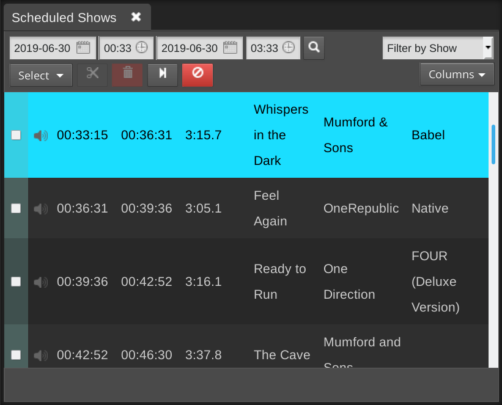
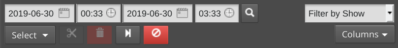
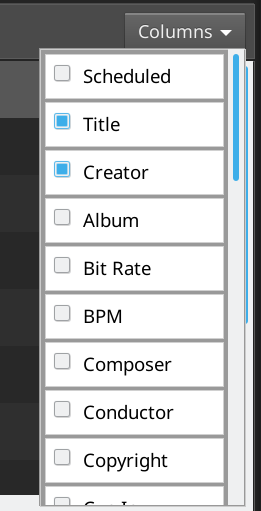
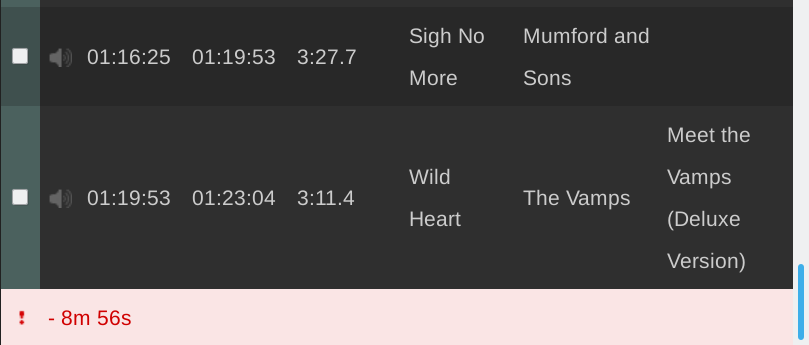
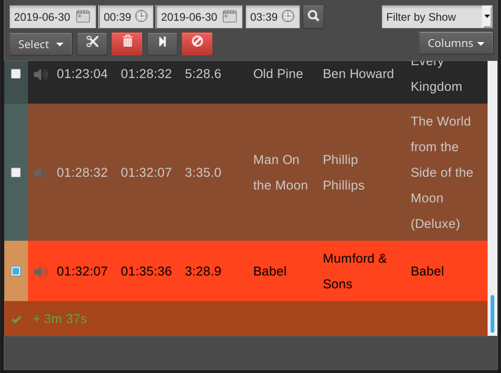
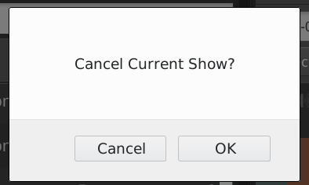
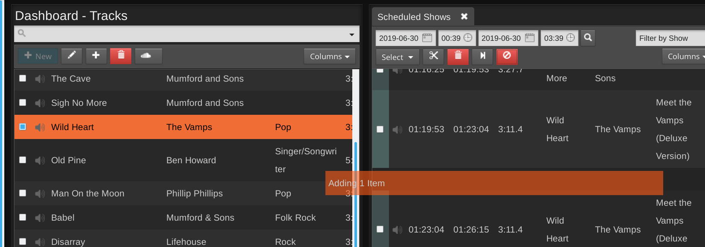

Dashboard
The Dashboard is divided into two sections a Library section divided between Tracks, Playlists, Smart Blocks, Webstreams, and Podcasts, with the Scheduled Shows dialog on the right. This page provides an overview of the right-hand interface. Check the links to see information about the other sections which provide the content that can be scheduled.
The Scheduled Shows page provides a view of the content your station is will playout, or has already played out, which defaults to showing the 3 hours ahead. This page also enables you to make last-minute changes to running shows.
If you've only just installed LibreTime, there might not be any content shown yet. Click the calendar and clock icons above the table to change the date and time range, then click the Find Shows button (with the magnifying glass icon) to the right.

To display the content of a particular show, click Filter by Show and select the name of the show from the drop-down menu which will appear.

On the left side of the page, the Start and End times, Duration and Title of each content item are shown. On the right, Creator, Album, Cue or Fade times and Mime type (file format) can also be shown. This information can help you to prepare voice tracks for insertion into the show, including time checks if you wish. Putting current time information i to voice tracks describing specific content can, of course, limit the re-usability of those voice tracks, unless you always broadcast a particular item at the same time of day.
Click the Show/hide columns button on the right to configure the metadata displayed, by checking the boxes in the pop-up window.

The row for the currently playing item is displayed with a bright green background. Any underbooked shows (shows with insufficient content to fill the time allowed) are displayed with a row indicating the length of the underbooking in minutes and seconds. These rows contain a red exclamation mark in the first column, and have a pink background.

Removing content from a running show
If a show is overbooked, which means the total playout duration is longer than the time allowed for the show, a brown row indicates that the item will be faded out when the show ends. A red row indicates that the item will not be played at all. The length of the overbooking is shown in minutes and seconds in the last row of the show. To remove the extra items from the end of an overbooked show, click the Scissors button at the top left of the table.
Alternatively, check the boxes for items which have not yet completed playout, and click the Trashcan button, to the right of the Scissors, to remove them from the schedule. If you remove the currently playing item, playout will skip to the next item in the show automatically, so you should make sure you have enough items remaining in the show to avoid dead air.

If you have a long schedule displayed, and you wish to skip to the currently playing item, click the button with the end arrow icon, to the right of the Trashcan.
To cancel the current show completely, click the red button to the right again. A pop-up window will ask you to confirm the cancellation, as this action cannot be undone.

Items which are no longer available have an exclamation mark icon in the second column. This may happen for media files which were part of previous shows, and were removed from LibreTime's library (main storage or watched folders) subsequently. Items which are included in forthcoming shows cannot be removed from the Library via the LibreTime interface.
Adding content to a running show
After you have found the items that you want using the search tools, you can then drag and drop them from the library table on the left side of the page into the shows on the right side, including the current playing show.
If the current show has nothing playing out at the time, the new item will begin playing immediately. This manual triggering of playout can be used as a live assist technique, in which the LibreTime server's soundcard output is mixed with other sources such as microphones or telephone hybrids on its way to a transmitter, or a separate stream encoder. For instance, a live show's host may not wish to cut off a studio discussion in order to play music at a fixed time.

You can also select multiple items using the Select menu button, just beneath the simple search field, which has the options to Select this page of search results, Deselect this page and Deselect all. Alternatively, use the checkboxes on the left side of the library table to select specific items. Then drag one of the items into the show to add all of the selected items, or click the Add to selected show button, which has a plus icon. If you wish, you can also use the Trashcan button to permanently remove items from LibreTime's library. Only admin users have permission to delete all items.
To insert checkbox selected items at a specific time in the show schedule, click one of the songs in the schedule table. Then click the Add to selected show button in the library table. This will insert the library songs after the selected scheduled song.
To add a single item at the insertion point, double-click on it in the library. There is no need to select or drag the item first.
Right-clicking on a song in the schedule table will show a pop-up. This pop-up menu also enables you to audition the entire show in advance of playout, or remove the item that was clicked on from the show.
Multiple insertion points can be enabled, so that the same item is inserted into the schedule at different times. For example, you may wish to play a news report every hour, or a station ident after every five music files.